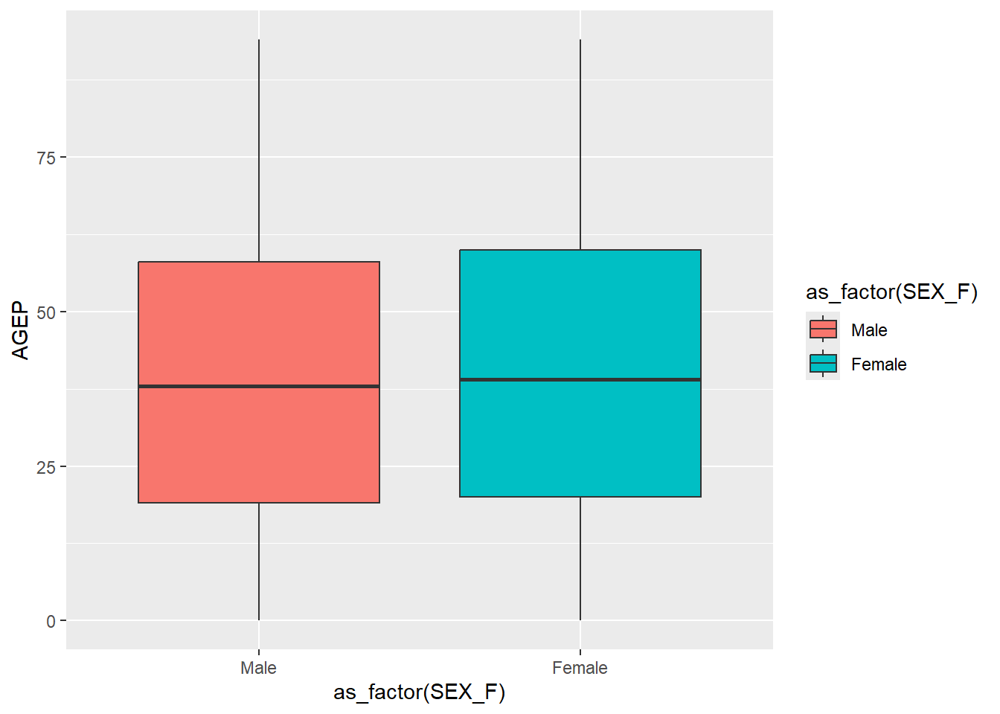
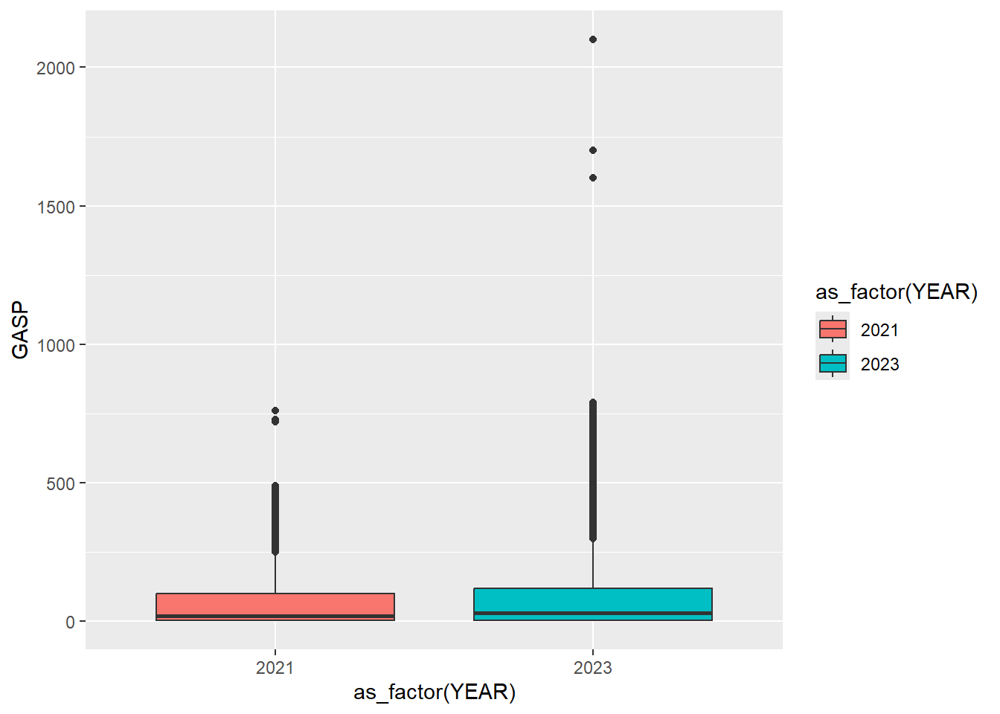
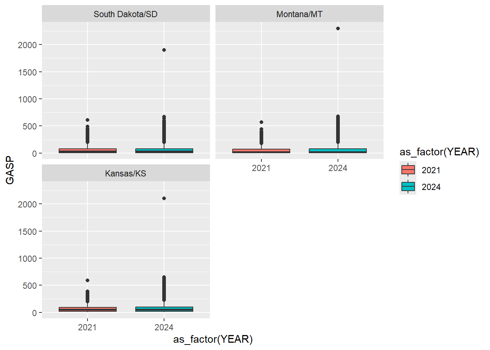
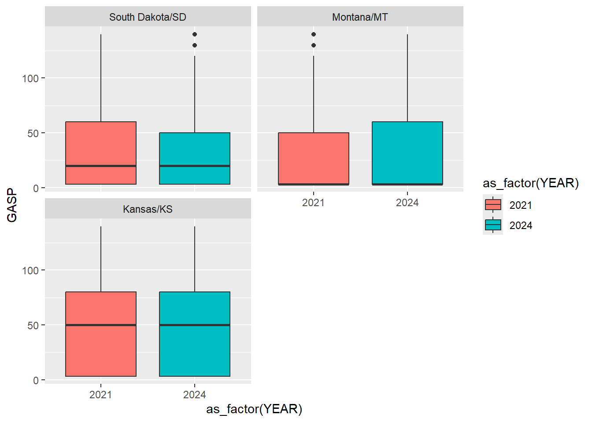
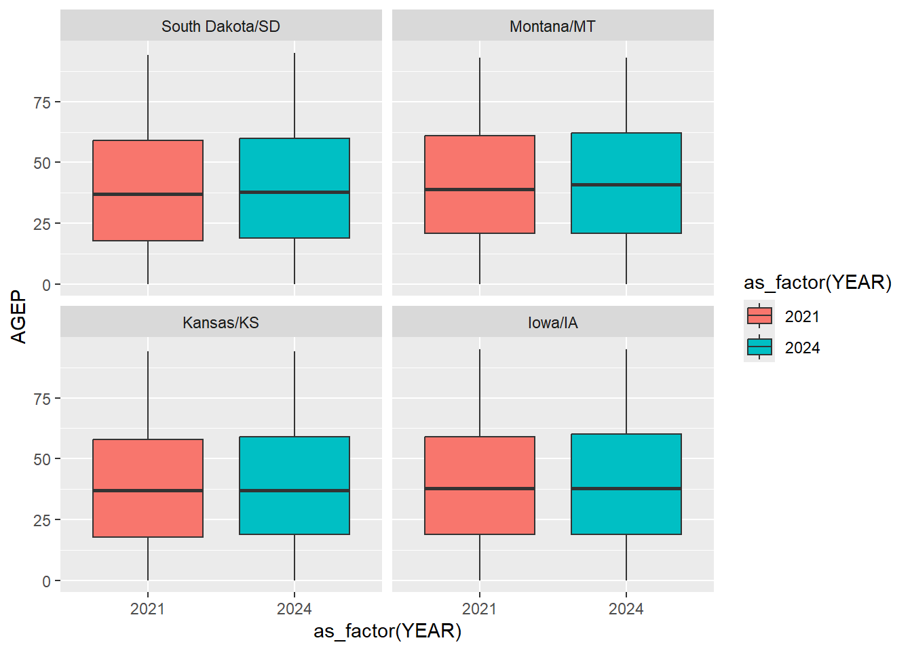

options(error = NULL)Project 1
Getting data
To start, I’m going to put my API key here for safe keeping: 640ce0de32b08c9ded3cc11874a33ea9200c2c78
Part 1: Data Processing
Parsing Variable Values
The first thing I’m going to do is pull the list of variable names from the website, and parse them individually, starting with 2021. Mostly, I did it this way to get things figured out on a small scale before moving to the rest of the years.
I’ll also use this block to load the libraries I’ll be using and set the option I need but can’t seem to fix globally.
#Get first set of variables.
cen_vars21<-GET("https://api.census.gov/data/2021/acs/acs1/pums/variables.json?key=640ce0de32b08c9ded3cc11874a33ea9200c2c78")
parsed_vars21<-fromJSON(rawToChar(cen_vars21$content))# Save the variables I want to keep.
vars2021<-parsed_vars21$variables[c("AGEP","GASP","GRPIP","JWAP","JWDP","JWMNP","PWGTP","FER","HHL","SCH","SCHL","SEX","ST","REGION","DIVISION")]Now to do 2022 I can just change a couple of 1’s to 2’s:
# Repeating the above for 2022.
cen_vars22<-GET("https://api.census.gov/data/2022/acs/acs1/pums/variables.json?key=640ce0de32b08c9ded3cc11874a33ea9200c2c78")
parsed_vars22<-fromJSON(rawToChar(cen_vars22$content))# Ditto
vars2022<-parsed_vars22$variables[c("AGEP","GASP","GRPIP","JWAP","JWDP","JWMNP","PWGTP","FER","HHL","SCH","SCHL","SEX","ST","REGION","DIVISION")]For 2023 and 2024, though, I need to change the numbers, but also “ST” to “STATE”:
# Repeating the above for 2023.
cen_vars23<-GET("https://api.census.gov/data/2023/acs/acs1/pums/variables.json?key=640ce0de32b08c9ded3cc11874a33ea9200c2c78")
parsed_vars23<-fromJSON(rawToChar(cen_vars23$content))
vars2023<-parsed_vars23$variables[c("AGEP","GASP","GRPIP","JWAP","JWDP","JWMNP","PWGTP","FER","HHL","SCH","SCHL","SEX","STATE","REGION","DIVISION")]# Repeating the above for 2024.
cen_vars24<-GET("https://api.census.gov/data/2024/acs/acs1/pums/variables.json?key=640ce0de32b08c9ded3cc11874a33ea9200c2c78")
parsed_vars24<-fromJSON(rawToChar(cen_vars24$content))
vars2024<-parsed_vars24$variables[c("AGEP","GASP","GRPIP","JWAP","JWDP","JWMNP","PWGTP","FER","HHL","SCH","SCHL","SEX","STATE","REGION","DIVISION")]At this point, for convenience later, I’m going to rename the state variables in vars2021 and vars2022 to match the other years.
#Renaming STATE variables
vars2021$STATE<-vars2021$ST
vars2022$STATE<-vars2022$ST
# To avoid confusion, I'll remove the "ST" lists from vars2021 & vars2022:
vars2021$ST<-NULL
vars2022$ST<-NULLAlright, so I have my lists, now to save them in an .rds file:
# Saving lists to RDS
var_lists<-list(vars2021=vars2021,vars2022=vars2022,vars2023=vars2023,vars2024=vars2024)
saveRDS(var_lists,file="data/var_lists")Parsing API Data
First bullet
First up, I’ll try to query the API using the normal method. Note that I kept the filtering from the given example to keep things from taking forever.
#Trial API pull
test<-GET("https://api.census.gov/data/2021/acs/acs1/pums?get=AGEP,SEX,ST&for=state:*&SCHL=24&key=640ce0de32b08c9ded3cc11874a33ea9200c2c78")
testResponse [https://api.census.gov/data/2021/acs/acs1/pums?get=AGEP,SEX,ST&for=state:*&SCHL=24&key=640ce0de32b08c9ded3cc11874a33ea9200c2c78]
Date: 2026-10-02 23:05
Status: 200
Content-Type: application/json;charset=utf-8
Size: 1.12 MB
[["AGEP","SEX","ST","SCHL","state"],
["71","1","20","24","20"],
["49","1","48","24","48"],
["81","2","36","24","36"],
["94","1","06","24","06"],
["86","2","55","24","55"],
["46","1","12","24","12"],
["72","2","39","24","39"],
["85","2","48","24","48"],
["85","1","34","24","34"],
...# Parsing result, fixing naming issue
test_parsed<-fromJSON(rawToChar(test$content))
test_data<-as_tibble(test_parsed,.name_repair = "unique")New names:
• `` -> `...1`
• `` -> `...2`
• `` -> `...3`
• `` -> `...4`
• `` -> `...5`I got an error stating that the I must have unique column names and I found help related to name_repair online to fix that. Now, to look at what’s coming out of this…
#Examine result
head(test_data)# A tibble: 6 × 5
...1 ...2 ...3 ...4 ...5
<chr> <chr> <chr> <chr> <chr>
1 AGEP SEX ST SCHL state
2 71 1 20 24 20
3 49 1 48 24 48
4 81 2 36 24 36
5 94 1 06 24 06
6 86 2 55 24 55 So, it looks like what we got back has the names for the variables in the first row, so we should fix that.
#Renaming variable names
test_data_fixed<-test_data|>
rename("AGEP"="...1","SEX"="...2","ST"="...3","SCHL"="...4","STATE"="...5")|>
slice(-1)
test_data_fixed# A tibble: 41,592 × 5
AGEP SEX ST SCHL STATE
<chr> <chr> <chr> <chr> <chr>
1 71 1 20 24 20
2 49 1 48 24 48
3 81 2 36 24 36
4 94 1 06 24 06
5 86 2 55 24 55
6 46 1 12 24 12
7 72 2 39 24 39
8 85 2 48 24 48
9 85 1 34 24 34
10 65 1 17 24 17
# ℹ 41,582 more rowsLooks pretty good, I think, but what I did won’t translate nicely into the function I need to write next. Just wanted to develop a sense for how to do it.
Second bullet
Now, we need to work on getting a function that takes what’s returned by GET() and turns it into a nice tibble Note that I also found the “set_names” function online, which means I can fix the column names all at once (instead of piecemeal).
#Functionalizing GET()
make_tib<-function(x){
query_parsed<-fromJSON(rawToChar(x$content))
query_data<-as_tibble(query_parsed,.name_repair="unique_quiet")|>
set_names(query_parsed[1,])|>
slice(-1)
query_data
}Note that test is still a defined GET() output from before. Let’s take it for a spin.
#Trying function
make_tib(test)# A tibble: 41,592 × 5
AGEP SEX ST SCHL state
<chr> <chr> <chr> <chr> <chr>
1 71 1 20 24 20
2 49 1 48 24 48
3 81 2 36 24 36
4 94 1 06 24 06
5 86 2 55 24 55
6 46 1 12 24 12
7 72 2 39 24 39
8 85 2 48 24 48
9 85 1 34 24 34
10 65 1 17 24 17
# ℹ 41,582 more rowsSeems alright!
Third bullet
Query Validation
Now, the big one. We need to write a function that takes, as inputs, year of survey (default of 2024), numeric variables (default to AGEP, with PWGTP always returned), categorical variables (at least one, with SEX as the default), geography level (default to STATE) and one specific value of the variable.
I’m going to start by setting up the function defaults and creating error messages if/when improper calls are made. For now, I’m going to just make the function add 1 to a number so I can focus on the function setup (with a focus on functionality to come).
#Setting up query validation function. Note "x" and "x+1" there to give funciton something to do besides just check inputs.
query_validation<-function(yr=2024,num_vars="AGEP",cat_vars="SEX",geo_level="STATE",geo_vars="ALL",x=5){
yr_called<-var_lists[[paste0("vars",yr)]]
if(yr!=2024 & yr!=2023 & yr != 2022 & yr != 2021){
stop("year error: You must enter year value of 2021, 2022, 2023 or use default of 2024.")
}
if(sum(num_vars %in% c("AGEP", "GASP", "GRPIP", "JWAP","JWDP","JWMNP"))!=length(num_vars) ){
stop("num_vars error: You must enter a subset of the following numerical variables: AGEP, GASP, GRPIP, JWAP, JWDP or JWMNP.")
}
if(sum(cat_vars %in% c("FER", "HHL", "SCH", "SCHL","SEX"))!=length(cat_vars) || length(cat_vars)==0){
stop("car_vars error: You must enter a nonempty subset of the following categorical variables: FER, HHL, SCH, SCHL,SEX.")
}
if(geo_level=="ST"){geo_level<-"STATE"}
if(length(geo_level)>1 || geo_level %in% c("STATE","REGION","DIVISION") != 1){
stop("geo_level error: You must select one of the following geographical levels: STATE, REGION or DIVISION.")
}
if(geo_level == "REGION" && toupper(geo_vars[1]) != "ALL" && !all(as.character(geo_vars) %in% names(yr_called$REGION$values$item))){
print(unlist(yr_called$REGION$values$item))
stop("geo_var error: Since geo_level selection is region, you must select one or more of the regions listed above. Be sure to use the provided (numeric) label.For example, set geo_vars=c('1','2') for Northeast and Midwest, where the single quotation marks are replaced with standard double quotation marks.")
}
if((geo_level == "STATE" || geo_level == "ST") && toupper(geo_vars[1]) != "ALL" && !all(as.character(geo_vars) %in% names(yr_called$STATE$values$item))){
print(unlist(yr_called$STATE$values$item))
stop("geo_var error: Since geo_level selection is state, you must select one or more of the states from the list above. Be sure to use the provided (numeric) label.For example, set geo_vars=c('01','02') for Alabama and Alaska, where the single quotation marks are replaced with standard double quotation marks.")
}
if(geo_level == "DIVISION" && toupper(geo_vars[1]) != "ALL" && !all(as.character(geo_vars) %in% names(yr_called$DIVISION$values$item))){
print(unlist(yr_called$DIVISION$values$item))
stop("geo_var error: Since geo_level selection is division, you must select one or more of the divisions from the list above. Be sure to use the provided (numeric) label. For example, set geo_vars=c('0','1') for Puerto Rico and New England (Northeast region), where the single quotation marks are replaced with standard double quotation marks.")
}
x+1
return(geo_level)
}Helper functions
Alright, it looks like all my validation stuff is working (at least, the logical tests are), so I’ll hopefully be able to call it in my main query function. I started by making my function slowly, by first putting it together with a carefully curated URL, then adding in the validation and tibble-making functions. Then, I worked out how to assign the proper values within the categorical variable columns. So, what’s presented here is out-of-sync with development. I didn’t want to keep showing you the “make_query” function, then a new helper function, then “make_query” over again with the new helper added in.
It’s worth noting here that I had a really hard time getting all this to work out. For example, in constructing the URL, I initially ran into trouble because, when I wanted multiple numerical and/or categorical variables, it would create a new URL for each value in the variable. It also took me quite a while to get the ability to pick geography level, and then either all or a subset of the variable values within the level selected. I amended the error code above to provided the lists the user could use to find the labels they need.
In the assigning-levels to the categorical variables, my plan was to start with the easiest columns (any non-time numeric variables), then handle the categorical ones and then end with using an LLM to sort out the time variables. I should note that, for the categorical variables, I got it working with a single year and variable first and then ran into trouble figuring out how to expand that to multiple variables within a loop. The technicality of how things get treated (e.g., what needs quotation marks, what types of things are allowed to follow a $, etc.) was really difficult for me but a helpful email got me going on that. Finally, I did end up relying on AI to take care of the time variables but the nice thing about LLM’s is that they’re pretty patient with users asking lots of questions about how things work (and explaining things one line at a time).
To re-iterate my process a bit, I got my function working with defaults first, then folded in the validation (which should stop the whole shebang if it fails), then constructed the link, tibble-fied what came back using the functions from before, and then worked on the factors and levels. What you see below misrepresents the order of all that, but I didn’t want to keep re-inserting the big function (make_query) every time I added to it.
# Helper to convert a single "HH:MM a.m. to HH:MM a.m." string to its midpoint time
parse_time_midpoint <- function(time_str) {
# Return NA for missing, NA strings, or non-range values (e.g., "N/A", "Did not work")
if (is.na(time_str) || !grepl(" to ", time_str, ignore.case = TRUE)) {
return(hms::as_hms(NA))
}
# Clean up Census 'a.m.'/'p.m.' formatting for lubridate parse_date_time
cleaned_str <- tolower(gsub("\\.", "", time_str))
parts <- unlist(strsplit(cleaned_str, " to "))
# Parse start and end as date-times on a dummy date. NOte that _dt is really talking about a time here, not a date.
start_dt <- parse_date_time(parts[1], orders = "I:M p")
end_dt <- parse_date_time(parts[2], orders = "I:M p")
# Handle overnight wraparound (e.g., 11:50 pm to 12:05 am)
if (!is.na(start_dt) && !is.na(end_dt) && end_dt < start_dt) {
end_dt <- end_dt + days(1)
}
# Calculate midpoint time. Does calculations on times. Nice.
midpoint_dt <- start_dt + (end_dt - start_dt) / 2
# Extract time component as hms object
hms::as_hms(midpoint_dt)
}
# Vectorized version for use inside mutate(). This part showed me a potential work around for something I ran into before: R not running logical tests across vectors. Also, AI stepped me through the process of parsing the values once, then applying them to the values that show up.
time_midpoint <- function(vec) {
#Identifies unique strings in the input vector
unique_vals <- unique(vec[!is.na(vec)])
# Applies the parsing function across the vector (once)
parsed_unique <- vapply(unique_vals, parse_time_midpoint, FUN.VALUE = hms::hms(0))
# Creates a vector which is used to match up times and mid-points
names(parsed_unique) <- unique_vals
unname(parsed_unique[as.character(vec)])
}fix_cols<-function(x,yr,cat_vars=NULL){
colnames(x)<-toupper(colnames(x))
# Setting ST to STATE, if necessary
if ("ST" %in% colnames(x) && !"STATE" %in% colnames(x)) {
colnames(x)[colnames(x) == "ST"] <- "STATE"
}
# Making numeric values numeric.
num_list <- c("PWGTP", intersect(colnames(x), c("AGEP", "GASP", "GRPIP","JWMNP")))
for (col in num_list) {
x[[col]] <- as.numeric(x[[col]])
}
# Setting levels for categorical (and geographical) variables
cat_list<-intersect(colnames(x),c("FER","HHL","SCH","SCHL","SEX","STATE", "REGION", "DIVISION"))
yr_called<-var_lists[[paste0("vars",yr)]]
#Assigning levels to categorical (and geographical) variables
for(var_called in cat_list){
# Get the right levels for right variable list
if (!is.null(yr_called[[var_called]]$values$item)) {
lvls<-unlist(yr_called[[var_called]]$values$item)
new_name<-paste0(var_called,"_F")
x[[new_name]]<-factor(lvls[as.character(x[[var_called]])],levels=unname(lvls))
}
}
# Fix time variables.
time_list=intersect(colnames(x),c("JWAP","JWDP"))
for(var_called in time_list){
# Get the right levels for right variable list
if (!is.null(yr_called[[var_called]]$values$item)) {
lvls<-unlist(yr_called[[var_called]]$values$item)
# Gets values from tibble, feeds them into time_midpoint function
time_labels <- lvls[as.character(x[[var_called]])]
x[[var_called]] <- time_midpoint(time_labels)
}
}
# Move my new columns to the front, after a new YEAR column since we'll need it later
x[["YEAR"]] <- yr
select(x, PWGTP, YEAR, ends_with("_F"), any_of(c("JWDP", "JWAP")),everything())
}Query Function
#Query function, with validation and tibble-making from above.
make_query<-function(yr=2024,num_vars="AGEP",cat_vars="SEX",geo_level="STATE",geo_vars="ALL"){
query_validation(yr,num_vars,cat_vars,geo_level,geo_vars,x=5)
geo_level_lower <- tolower(geo_level)
geo_level_lower<-if(geo_level_lower == "st"){"state"}else{geo_level_lower}
if(length(geo_vars)==1 && toupper(geo_vars) %in% "ALL"){
geo<-paste0("&for=",geo_level_lower,":*")
}else{
geo<-paste0("&for=",geo_level_lower,":",paste(geo_vars,collapse=","))
}
link<-paste0("https://api.census.gov/data/",yr,"/acs/acs1/pums?get=",paste(num_vars,collapse=","),",",paste(cat_vars,collapse=","),",PWGTP",geo,"&key=640ce0de32b08c9ded3cc11874a33ea9200c2c78")
first_call<-GET(link)
made_tib<-make_tib(first_call)
query_tibble<-fix_cols(made_tib,y=yr)
class(query_tibble)<-c("census",class(query_tibble))
query_tibble
#print(link)
}Now, to test it a bit:
try<-make_query(geo_level="DIVISION",geo_vars="2",cat_vars=c("FER","SEX"),num_vars = c("GRPIP","GASP","JWAP"),yr=2021)
try# A tibble: 423,008 × 11
PWGTP YEAR FER_F SEX_F DIVISION_F JWAP GRPIP GASP FER SEX DIVISION
<dbl> <dbl> <fct> <fct> <fct> <dbl> <dbl> <dbl> <chr> <chr> <chr>
1 70 2021 N/A (les… Male Middle At… NA 0 3 0 1 2
2 61 2021 N/A (les… Male Middle At… NA 0 3 0 1 2
3 82 2021 N/A (les… Male Middle At… 35220 0 3 0 1 2
4 34 2021 N/A (les… Male Middle At… NA 0 3 0 1 2
5 12 2021 N/A (les… Fema… Middle At… NA 0 3 0 2 2
6 22 2021 N/A (les… Fema… Middle At… NA 0 3 0 2 2
7 25 2021 N/A (les… Male Middle At… NA 0 3 0 1 2
8 10 2021 No Fema… Middle At… NA 0 3 2 2 2
9 72 2021 N/A (les… Male Middle At… NA 0 3 0 1 2
10 65 2021 N/A (les… Male Middle At… NA 0 3 0 1 2
# ℹ 422,998 more rowsCombining years
Now that I think I have my tibble-making query function working, I’m ready to try to combine a few.
multi_year_query<-function(yrs=c(2021,2022),num_vars="AGEP",cat_vars="SEX",geo_level="STATE",geo_vars="ALL"){
# Making sure we have valid years
if(sum(yrs %in% c(2021,2022,2023,2024))!=length(yrs) || length(yrs)==0){
stop("yrs error: You must enter a nonempty subset of the following 2021,2022,2023,2024")
}
q_list=list()
#Make a tibble for every year (and other variables) selected
for(i in 1:length(yrs)){
q_list[[i]]<-make_query(yrs[i],num_vars=num_vars,cat_vars=cat_vars,geo_level=geo_level,geo_vars=geo_vars)
}
all_years<-bind_rows(q_list)
all_years
}Giving it a shot:
make<-multi_year_query(yrs=c(2021,2023),geo_level="DIVISION",geo_vars="2",cat_vars=c("FER","SEX"),num_vars = c("GRPIP","GASP","JWAP"))
make# A tibble: 856,974 × 11
PWGTP YEAR FER_F SEX_F DIVISION_F JWAP GRPIP GASP FER SEX DIVISION
<dbl> <dbl> <fct> <fct> <fct> <dbl> <dbl> <dbl> <chr> <chr> <chr>
1 70 2021 N/A (les… Male Middle At… NA 0 3 0 1 2
2 61 2021 N/A (les… Male Middle At… NA 0 3 0 1 2
3 82 2021 N/A (les… Male Middle At… 35220 0 3 0 1 2
4 34 2021 N/A (les… Male Middle At… NA 0 3 0 1 2
5 12 2021 N/A (les… Fema… Middle At… NA 0 3 0 2 2
6 22 2021 N/A (les… Fema… Middle At… NA 0 3 0 2 2
7 25 2021 N/A (les… Male Middle At… NA 0 3 0 1 2
8 10 2021 No Fema… Middle At… NA 0 3 2 2 2
9 72 2021 N/A (les… Male Middle At… NA 0 3 0 1 2
10 65 2021 N/A (les… Male Middle At… NA 0 3 0 1 2
# ℹ 856,964 more rowsAnd again.
make1<-multi_year_query(yrs=c(2021,2022,2024),geo_level="STATE",geo_vars="27",num_vars = c("AGEP","GASP"))
make1# A tibble: 175,525 × 8
PWGTP YEAR SEX_F STATE_F AGEP GASP SEX STATE
<dbl> <dbl> <fct> <fct> <dbl> <dbl> <chr> <chr>
1 39 2021 Female Minnesota/MN 47 3 2 27
2 19 2021 Female Minnesota/MN 94 3 2 27
3 22 2021 Male Minnesota/MN 18 3 1 27
4 29 2021 Female Minnesota/MN 79 3 2 27
5 102 2021 Female Minnesota/MN 51 3 2 27
6 11 2021 Female Minnesota/MN 53 3 2 27
7 18 2021 Female Minnesota/MN 35 3 2 27
8 54 2021 Female Minnesota/MN 19 3 2 27
9 9 2021 Female Minnesota/MN 52 3 2 27
10 89 2021 Male Minnesota/MN 21 3 1 27
# ℹ 175,515 more rowsAnd again.
make2<-multi_year_query(geo_level="DIVISION",geo_vars="2",num_vars = c("AGEP"),cat_vars=c("SCH","SEX","HHL"))
make2# A tibble: 852,670 × 11
PWGTP YEAR SCH_F SEX_F HHL_F DIVISION_F AGEP SCH SEX HHL DIVISION
<dbl> <dbl> <fct> <fct> <fct> <fct> <dbl> <chr> <chr> <chr> <chr>
1 70 2021 No, has … Male N/A … Middle At… 18 1 1 0 2
2 61 2021 Yes, pri… Male N/A … Middle At… 20 3 1 0 2
3 82 2021 Yes, pub… Male N/A … Middle At… 24 2 1 0 2
4 34 2021 No, has … Male N/A … Middle At… 77 1 1 0 2
5 12 2021 No, has … Fema… N/A … Middle At… 65 1 2 0 2
6 22 2021 No, has … Fema… N/A … Middle At… 88 1 2 0 2
7 25 2021 No, has … Male N/A … Middle At… 56 1 1 0 2
8 10 2021 No, has … Fema… N/A … Middle At… 48 1 2 0 2
9 72 2021 Yes, pri… Male N/A … Middle At… 17 3 1 0 2
10 65 2021 No, has … Male N/A … Middle At… 51 1 1 0 2
# ℹ 852,660 more rowsLooks like it’s working! NGL, Part 1 was an absolute slog. Here’s hoping Part 2 is infinitely differentiable. (Please forgive me, with my retraining I rarely get to make calc puns these days.)
Part 2: Writing a Generic Function for Summarizing
Numeric Summaries
For this, we need to write a function that will take in the tibble created from our query and variables selected by the user and summarize them appropriately. As before, I attacked this problem a small piece at a time so what you see below grew as I added capability to it.
In fact, this is another place where I needed to add something after the fact so this isn’t the original function. Specifically, I addded #Summary stats grouped by cats after I realized during the investigation that I wanted the mean for each state that had been called.
# Numerical summary function
summary.census<-function(x,cat_vars=c("FER_F","HHL_F","SCH_F","SCHL_F","SEX_F","STATE_F", "REGION_F", "DIVISION_F"),num_vars=c("AGEP", "GASP", "GRPIP","JWMNP"), nsum=c("MEAN","STDEV")){
if(sum(nsum %in% c("MEAN","STDEV"))!=length(nsum)){
stop("nsum error: You must enter a subset of the following numerical summaries: MEAN,STDEV.")
}
big_sum<-list()
cats<-intersect(colnames(x),cat_vars)
#Clean up names a bit
for(c in cats){
newc<-unlist(strsplit(c, "[_]"))
sum_name<-paste0(newc[[1]],"_Count")
# Get counts
big_sum[[sum_name]]<-x|>
drop_na(.data[[c]])|>
group_by(.data[[c]])|>
summarize(count=n())
}
# Now for the numeric variables.
nums<-intersect(colnames(x),num_vars)
# Get numerical summary
## Overall mean for each column
for(n in nums){
#Need for both
temp_Mean<-(sum(x[[n]]*x$PWGTP,na.rm = TRUE)/sum(x$PWGTP,na.rm = TRUE))
if("MEAN" %in% nsum){
#Name new variable
sum_name<-paste0(n,"_MEAN")
#Calculate new variable
big_sum[[sum_name]]<-temp_Mean
}
## For StDev
if("STDEV" %in% nsum){
#Name new variable
sum_name<-paste0(n,"_STDEV")
#Calculate new variable
big_sum[[sum_name]]<-sqrt(sum((x[[n]]-temp_Mean)^2*x$PWGTP,na.rm = TRUE)/sum(x$PWGTP,na.rm = TRUE))
}
}
#Summary stats grouped by cats
if("MEAN" %in% nsum){
cat_means<-x|>drop_na(cats,nums)|>
group_by(across(all_of(cats)))|>
summarize(across(all_of(nums),.fns=list(mean=~sum(.x*PWGTP)/sum(PWGTP)),.names="{.fn}_{.col}"))
big_sum[["cat_means"]] <- cat_means
}
if("STDEV" %in% nsum){
cat_sds<-x|>drop_na(cats,nums)|>
group_by(across(all_of(cats)))|>
summarize(across(all_of(nums),.fns=list(sd=~sqrt(sum(.x^2*PWGTP)/sum(PWGTP)-(sum(.x*PWGTP)/sum(PWGTP))^2)),.names="{.fn}_{.col}"))
big_sum[["cat_sds"]] <- cat_sds
}
big_sum
}Now to let summary.census stretch its legs.
sum_it_up<-summary.census(make1)Warning: Use of .data in tidyselect expressions was deprecated in tidyselect 1.2.0.
ℹ Please use `all_of(var)` (or `any_of(var)`) instead of `.data[[var]]`Warning: Using an external vector in selections was deprecated in tidyselect 1.1.0.
ℹ Please use `all_of()` or `any_of()` instead.
# Was:
data %>% select(cats)
# Now:
data %>% select(all_of(cats))
See <https://tidyselect.r-lib.org/reference/faq-external-vector.html>.Warning: Using an external vector in selections was deprecated in tidyselect 1.1.0.
ℹ Please use `all_of()` or `any_of()` instead.
# Was:
data %>% select(nums)
# Now:
data %>% select(all_of(nums))
See <https://tidyselect.r-lib.org/reference/faq-external-vector.html>.`summarise()` has regrouped the output.
`summarise()` has regrouped the output.
ℹ Summaries were computed grouped by SEX_F and STATE_F.
ℹ Output is grouped by SEX_F.
ℹ Use `summarise(.groups = "drop_last")` to silence this message.
ℹ Use `summarise(.by = c(SEX_F, STATE_F))` for per-operation grouping
(`?dplyr::dplyr_by`) instead.sum_it_up$SEX_Count
# A tibble: 2 × 2
SEX_F count
<fct> <int>
1 Male 88519
2 Female 87006
$STATE_Count
# A tibble: 1 × 2
STATE_F count
<fct> <int>
1 Minnesota/MN 175525
$AGEP_MEAN
[1] 39.49138
$AGEP_STDEV
[1] 23.45474
$GASP_MEAN
[1] 85.89272
$GASP_STDEV
[1] 149.7487
$cat_means
# A tibble: 2 × 4
# Groups: SEX_F [2]
SEX_F STATE_F mean_AGEP mean_GASP
<fct> <fct> <dbl> <dbl>
1 Male Minnesota/MN 38.7 86.4
2 Female Minnesota/MN 40.3 85.4
$cat_sds
# A tibble: 2 × 4
# Groups: SEX_F [2]
SEX_F STATE_F sd_AGEP sd_GASP
<fct> <fct> <dbl> <dbl>
1 Male Minnesota/MN 23.0 148.
2 Female Minnesota/MN 23.8 152.sum_it_up<-summary.census(make2,nsum="STDEV")`summarise()` has regrouped the output.
ℹ Summaries were computed grouped by SCH_F, SEX_F, HHL_F, and DIVISION_F.
ℹ Output is grouped by SCH_F, SEX_F, and HHL_F.
ℹ Use `summarise(.groups = "drop_last")` to silence this message.
ℹ Use `summarise(.by = c(SCH_F, SEX_F, HHL_F, DIVISION_F))` for per-operation
grouping (`?dplyr::dplyr_by`) instead.sum_it_up$SCH_Count
# A tibble: 4 × 2
SCH_F count
<fct> <int>
1 N/A (less than 3 years old) 22121
2 Yes, private school or college or home school 49230
3 No, has not attended in the last 3 months 647474
4 Yes, public school or public college 133845
$SEX_Count
# A tibble: 2 × 2
SEX_F count
<fct> <int>
1 Male 415475
2 Female 437195
$HHL_Count
# A tibble: 6 × 2
HHL_F count
<fct> <int>
1 N/A (GQ/vacant) 47877
2 Spanish 86440
3 Other Indo-European languages 73817
4 English Only 586765
5 Asian and Pacific Island languages 43870
6 Other Language 13901
$DIVISION_Count
# A tibble: 1 × 2
DIVISION_F count
<fct> <int>
1 Middle Atlantic (Northeast region) 852670
$AGEP_STDEV
[1] 23.39183
$cat_sds
# A tibble: 48 × 5
# Groups: SCH_F, SEX_F, HHL_F [48]
SCH_F SEX_F HHL_F DIVISION_F sd_AGEP
<fct> <fct> <fct> <fct> <dbl>
1 N/A (less than 3 years old) Male N/A (GQ/vacant) Middle At… 0.584
2 N/A (less than 3 years old) Male Spanish Middle At… 0.818
3 N/A (less than 3 years old) Male Other Indo-European la… Middle At… 0.829
4 N/A (less than 3 years old) Male English Only Middle At… 0.807
5 N/A (less than 3 years old) Male Asian and Pacific Isla… Middle At… 0.832
6 N/A (less than 3 years old) Male Other Language Middle At… 0.805
7 N/A (less than 3 years old) Female N/A (GQ/vacant) Middle At… 0.877
8 N/A (less than 3 years old) Female Spanish Middle At… 0.826
9 N/A (less than 3 years old) Female Other Indo-European la… Middle At… 0.814
10 N/A (less than 3 years old) Female English Only Middle At… 0.812
# ℹ 38 more rowsAlrighty, seems to work!
Graphical Summaries
Next up, we’re to make graphs where we have box plots with feature a numeric and a categorical variable, with a boxplot of the numeric variable for each value of the categorical variable. Always a good graph.
# Graphical summary function
graph.census<-function(x,cat="HHL_F",num="AGEP"){
cat_vars=c("FER_F","HHL_F","SCH_F","SCHL_F","SEX_F","STATE_F", "REGION_F", "DIVISION_F","YEAR")
num_vars=c("AGEP", "GASP", "GRPIP","JWMNP")
new_cats<-intersect(colnames(x),cat_vars)
new_nums<-intersect(colnames(x),num_vars)
#Check inputs
if(!(cat %in% new_cats) || length(cat)!=1 || !(num %in% new_nums) || length(num)!=1){
print(paste0("Select a single categorical variable from the following list:",paste(new_cats, collapse = ",")))
print(paste0("Select a single numerical variable from the following list:",paste(new_nums, collapse = ",")))
stop("variable selection error: Please try again.")
}
# Make boxplot(s)
g<- ggplot(x|>drop_na(all_of(c(cat,num))))
g<-g+geom_boxplot(aes(x=as_factor(.data[[cat]]),y=.data[[num]],fill=as_factor(.data[[cat]]),weight=PWGTP))
g
}During the trial and error process, I first ran the code above on the tibble make but it just sat and spun and spun without throwing an error. I looked at the size of the tibbles I’d already created and saw thatmake1 was much smaller and was drawn fairly quickly.
graph_it_up<-graph.census(make1,cat="SEX_F",num="AGEP")
graph_it_up
Being more confident that the code was working I was willing to let the function cook on the bigger tibbles:
graph_it_up<-graph.census(make,cat="YEAR",num="GASP")
graph_it_up
It’s not all that much to look at and it took 10 minutes, but it got there!
Investigation
For my investigation, I decided to look at the four regions included included in the data we’re using to see if there was there were any differences in how gas prices changed from region to region 2021 to 2024. For this question, I was going to stick to the box plots because I doubted the distributions will be symmetric enough for the mean and standard deviation to tell us much. That said, I this information isn’t useless and it gives me a chance to show summary.census works.
At first, I was going to get a tibble for the gas prices in each region for the years 2021 and 2024. As I was looking back through the notes, though, I saw the facet_wrap feature, so I’m going to get one big table with all the regions all at once.
Initially, when I tried this, I got this error: “Error in curl::curl_fetch_memory(url, handle = handle) : Failure when receiving data from the peer [api.census.gov]: Recv failure: Connection was reset.” After looking online, this can happen when you make big data requests (all regions at once) in rapid succession (using multi__year four times, right in a row).
So, instead of asking for all for fours years, for all four regions all at once, I’m just going to ask for 2021 and 2024, and focus on the three states I lived in before moving to MN: SD, MT, and KS.
# Get tibbles
sd_gasp<-multi_year_query(yrs=c(2021,2024),geo_level="STATE",geo_vars=46,num_vars = "GASP")
mt_gasp<-multi_year_query(yrs=c(2021,2024),geo_level="STATE",geo_vars=30,num_vars = "GASP")
ks_gasp<-multi_year_query(yrs=c(2021,2024),geo_level="STATE",geo_vars=20,num_vars = "GASP")# Now, to bind them together
big_bind<-bind_rows(sd_gasp,mt_gasp,ks_gasp)
big_bind# A tibble: 100,157 × 7
PWGTP YEAR SEX_F STATE_F GASP SEX STATE
<dbl> <dbl> <fct> <fct> <dbl> <chr> <chr>
1 72 2021 Female South Dakota/SD 3 2 46
2 13 2021 Male South Dakota/SD 3 1 46
3 56 2021 Male South Dakota/SD 3 1 46
4 113 2021 Female South Dakota/SD 50 2 46
5 129 2021 Male South Dakota/SD 50 1 46
6 119 2021 Male South Dakota/SD 50 1 46
7 81 2021 Female South Dakota/SD 50 2 46
8 199 2021 Male South Dakota/SD 80 1 46
9 341 2021 Female South Dakota/SD 80 2 46
10 190 2021 Female South Dakota/SD 80 2 46
# ℹ 100,147 more rows# Get boxplot
gassy_graph<-graph.census(big_bind,cat="YEAR",num="GASP")+facet_wrap(~STATE_F,ncol=2)
gassy_graph
This graph is really hard to read, due to some really big outliers, so I’m going to filter the tibble to start focusing down on reasonable values.
# Filter data, get boxplot
big_bind2<-filter(big_bind,GASP < 150)
gassy_graph2<-graph.census(big_bind2,cat="YEAR",num="GASP")+facet_wrap(~STATE_F,ncol=2)
gassy_graph2
Even with the filter placed, it’s pretty hard to read. In particular, getting a sense of the middle of the data isn’t really possible for KS, so I guess getting the mean is more important than I thought (which prompted the addition to my summary function I discussed above). So, for whatever it’s worth, I now know that mean GASP for MT is
GASP_mean<-summary.census(big_bind,cat_vars="STATE_F",num_vars="GASP", nsum="MEAN")
GASP_mean$STATE_Count
# A tibble: 3 × 2
STATE_F count
<fct> <int>
1 South Dakota/SD 18440
2 Montana/MT 22066
3 Kansas/KS 59651
$GASP_MEAN
[1] 70.08219
$cat_means
# A tibble: 3 × 2
STATE_F mean_GASP
<fct> <dbl>
1 South Dakota/SD 67.0
2 Montana/MT 57.5
3 Kansas/KS 75.8So, for whatever it’s worth, I now know that mean GASPs are far higher than one might expect, given the medians are nowhere near the weighted means. Of course, there are a lot of high outliers I’m not seeing due to filtering so it’s not terribly surprising.
Another investigation
As is probably obvious by now, I thought GASP represented gas prices (and that those outliers were errors in data entry or something) but I finally realized I was way off and looked up what it is and realized that gas price would not be something asked about on the census.
So, with that fairly embarrassing mistake aside, I’m shifting gears to looking ages within these states. I’m wondering if the pandemic caused discernible changes to demographics. For example, if the distribution age of people changed from 2021 to 2024, that might part of that population left (or came into the state) in that time. That means I need to pull some more data. I’m also going to add Iowa here because, in addition to the personal connection of being born there, I remember hearing about young people who worked remote moving to places like Des Moines and Iowa City. Let’s find out. Luckily, with my focus on these three fairly small states makes this quickish.
# Get tibbles
sd_age<-multi_year_query(yrs=c(2021,2024),geo_level="STATE",geo_vars=46,num_vars="AGEP")
mt_age<-multi_year_query(yrs=c(2021,2024),geo_level="STATE",geo_vars=30,num_vars="AGEP")
ks_age<-multi_year_query(yrs=c(2021,2024),geo_level="STATE",geo_vars=20,num_vars="AGEP")
ia_age<-multi_year_query(yrs=c(2021,2024),geo_level="STATE",geo_vars=19,num_vars="AGEP")Now, for the binding
age_bind<-bind_rows(sd_age,mt_age,ks_age,ia_age)
age_bind# A tibble: 166,488 × 7
PWGTP YEAR SEX_F STATE_F AGEP SEX STATE
<dbl> <dbl> <fct> <fct> <dbl> <chr> <chr>
1 25 2021 Male South Dakota/SD 17 1 46
2 36 2021 Male South Dakota/SD 69 1 46
3 46 2021 Male South Dakota/SD 18 1 46
4 13 2021 Female South Dakota/SD 94 2 46
5 35 2021 Male South Dakota/SD 19 1 46
6 22 2021 Male South Dakota/SD 9 1 46
7 5 2021 Female South Dakota/SD 86 2 46
8 30 2021 Female South Dakota/SD 94 2 46
9 42 2021 Male South Dakota/SD 33 1 46
10 93 2021 Female South Dakota/SD 33 2 46
# ℹ 166,478 more rowsAnd now for the looking.
age_graph<-graph.census(age_bind,cat="YEAR",num="AGEP")+facet_wrap(~STATE_F,ncol=2)
age_graph
These look fairly symmetric so looking at the means would give me some precision on the medians too:
# Get age averages 2021
age_summary21<-filter(age_bind,YEAR==2021)|>summary.census(cat_vars="STATE_F",num_vars="AGEP", nsum="MEAN")
age_summary21$STATE_Count
# A tibble: 4 × 2
STATE_F count
<fct> <int>
1 South Dakota/SD 8823
2 Montana/MT 10615
3 Kansas/KS 28957
4 Iowa/IA 32572
$AGEP_MEAN
[1] 39.08525
$cat_means
# A tibble: 4 × 2
STATE_F mean_AGEP
<fct> <dbl>
1 South Dakota/SD 38.6
2 Montana/MT 40.5
3 Kansas/KS 38.5
4 Iowa/IA 39.3# Get age averages 2024
age_summary24<-filter(age_bind,YEAR==2024)|>summary.census(cat_vars="STATE_F",num_vars="AGEP", nsum="MEAN")
age_summary24$STATE_Count
# A tibble: 4 × 2
STATE_F count
<fct> <int>
1 South Dakota/SD 9617
2 Montana/MT 11451
3 Kansas/KS 30694
4 Iowa/IA 33759
$AGEP_MEAN
[1] 39.61513
$cat_means
# A tibble: 4 × 2
STATE_F mean_AGEP
<fct> <dbl>
1 South Dakota/SD 39.4
2 Montana/MT 41.3
3 Kansas/KS 39.0
4 Iowa/IA 39.6Well, that was kind of a bust. Like with the boxplots, there isn’t a noticeable change here. Honestly, I didn’t really expect there to be without really diving into the crosstabs (to steal a phrase from Galen Druke) but it did give me something to look at and, hopefully, satisfy the requirements of the project.